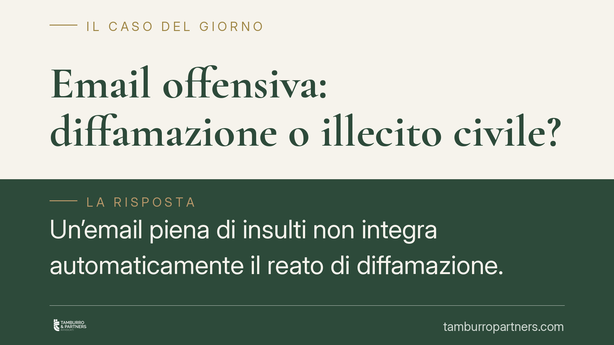

Email offensiva: diffamazione o illecito civile?
Un'email piena di insulti non integra automaticamente il reato di diffamazione. La Corte di Cassazione ha precisato che, se il messaggio raggiunge un solo destinatario e riguarda proprio lui, manca la comunicazione a più persone richiesta dalla legge. La distinzione tra diffamazione e ingiuria cambia in modo radicale le conseguenze per il mittente e le strade di tutela per chi riceve l'offesa.

Il fatto
Un messaggio di posta elettronica dal contenuto offensivo, inviato a un unico destinatario. È il caso su cui la giurisprudenza di legittimità è intervenuta chiarendo un principio spesso frainteso: non ogni offesa scritta via email costituisce diffamazione penale.
La questione ruota attorno a un elemento tecnico ma decisivo, cioè il numero delle persone che ricevono il messaggio e l'identità di chi viene offeso rispetto a chi legge.
Inquadramento normativo
Il codice penale distingueva due figure diverse. La diffamazione, prevista dall'art. 595 c.p., punisce chi, comunicando con più persone, offende la reputazione di qualcuno che non è presente. L'ingiuria, un tempo disciplinata dall'art. 594 c.p., colpiva invece l'offesa all'onore rivolta direttamente alla persona presente.
Qui va segnalato un passaggio importante. L'art. 594 c.p. è stato abrogato dal d.lgs. 7/2016: l'ingiuria non è più reato, ma è diventata un illecito civile che dà diritto al risarcimento del danno e al pagamento di una sanzione pecuniaria civile in favore dello Stato. La pronuncia richiamata è precedente a questa riforma, ma il criterio di distinzione resta pienamente attuale.
Il discrimine è la comunicazione con più persone. Se l'offesa arriva solo alla vittima, manca il requisito che caratterizza la diffamazione. Il messaggio, per quanto grave, non lede la reputazione davanti a terzi, perché nessun terzo lo legge.
Le implicazioni pratiche
Chi invia un'email offensiva a un unico destinatario, e quel destinatario è la persona offesa, non commette diffamazione. Rientra semmai nell'ingiuria, oggi illecito civile: niente processo penale, ma esposizione a una richiesta di risarcimento.
Lo scenario cambia se l'email è inviata anche ad altri, per esempio in copia conoscenza (Cc) a colleghi, superiori o familiari della vittima. In quel caso l'offesa raggiunge più persone e può integrare la diffamazione ex art. 595 c.p., con possibili aggravanti se diffusa tramite mezzi di pubblicità.
La forma dello strumento conta. Un'email inviata a una lista, un messaggio in una chat di gruppo, un post su un social visibile a terzi: sono tutte ipotesi che possono spostare la condotta dall'illecito civile al reato, perché la platea dei destinatari si allarga.
Per chi riceve l'offesa, questo significa che la strada di tutela dipende dalla dinamica concreta. La denuncia-querela per diffamazione ha senso solo se l'offesa ha raggiunto altre persone. Se il messaggio è arrivato solo alla vittima, la via è quella civile del risarcimento.
Un'ultima avvertenza sui termini. La querela per diffamazione va proposta entro tre mesi dalla conoscenza del fatto. L'azione civile per l'ex ingiuria segue invece i termini di prescrizione dell'illecito civile. Confondere le due strade fa perdere tempo prezioso.
Cosa fare in concreto
- Conservate le prove. Salvate l'email integrale con intestazioni tecniche complete, indirizzi mittente e destinatari, data e ora. Non limitatevi a uno screenshot.
- Verificate i destinatari. Controllate i campi A, Cc e Ccn: la presenza di altri destinatari determina se si tratta di diffamazione o di illecito civile.
- Valutate lo strumento e i tempi. Se l'offesa ha raggiunto terzi, considerate la querela entro tre mesi; se ha raggiunto solo voi, orientatevi verso l'azione risarcitoria civile.
- Non rispondete a tono. Una controffesa può esporvi a responsabilità speculare e indebolire la vostra posizione.
- Consultate un legale prima di agire. La qualificazione del fatto incide su procedura, termini e strategia: consigliamo una valutazione preliminare del singolo caso.
Conclusione
La gravità percepita di un'offesa non coincide con la sua qualificazione giuridica. Il confine tra diffamazione e illecito civile passa da un dato apparentemente banale, cioè chi ha letto quel messaggio. Prima di scegliere come reagire, quel dato va accertato con precisione.
Contributo informativo a cura di Tamburro & Partners - Avv. Giuseppe Tamburro. Non costituisce parere legale.
Ogni condominio ha una storia a sé.
Se gestisci un'amministrazione e vuoi un confronto su una specifica questione condominiale, scrivi allo studio. Ti rispondiamo entro un giorno lavorativo.